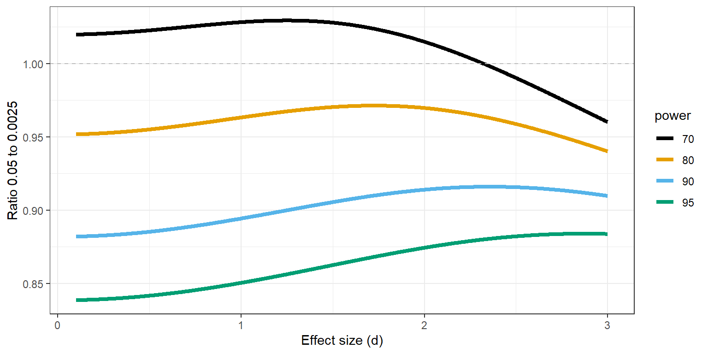

17 Replication Studies
In 2015 a team of 270 authors published the results of a research project where they replicated 100 studies (Open Science Collaboration, 2015). The original studies had all been published in three psychology journals in the year 2008. The authors of the replication project selected the last study of papers that could feasibly be replicated, performed a study with high power to detect the observed effect size, and attempted to design the best possible replication study. They stayed close to the original study where possible, but deviated where this was deemed necessary. For the original studies published in 2008 97 of the 100 studies were interpreted as significant. Given an estimated 92% power for the effect sizes observed in the original studies 97 \(\times\) 0.92 = 89 of the replication studies could be expected to observe a significant effect, if the effects in the original studies were at least as large as reported. Yet, only 35 out of the 97 original studies that were significant replicated, for a replication rate of 36%. This result was a surprise for most researchers, and led to the realization that it is much more difficult to replicate findings than one might intuitively think. This result solidified the idea of a replication crisis, a sudden loss of confidence in the reliability of published results, which led to confusion and uncertainty about how scientists worked. Since 2015 the field of metascience has emerged to use empirical methods to study science itself and identify some of the causes of low replicability rates, and develop possible solutions to increase it.
At the same time, the authors of the replication project acknowledged that a single replication of 100 studies is just the starting point of trying to understand why it was so difficult to replicate findings in the literature. They wrote in their conclusion:
After this intensive effort to reproduce a sample of published psychological findings, how many of the effects have we established are true? Zero. And how many of the effects have we established are false? Zero. Is this a limitation of the project design? No. It is the reality of doing science, even if it is not appreciated in daily practice. Humans desire certainty, and science infrequently provides it. As much as we might wish it to be otherwise, a single study almost never provides definitive resolution for or against an effect and its explanation. The original studies examined here offered tentative evidence; the replications we conducted offered additional, confirmatory evidence. In some cases, the replications increase confidence in the reliability of the original results; in other cases, the replications suggest that more investigation is needed to establish the validity of the original findings. Scientific progress is a cumulative process of uncertainty reduction that can only succeed if science itself remains the greatest skeptic of its explanatory claims.
A replication study is an experiment where the methods and procedures in a previous study are repeated by collecting new data. Typically, the term direct replication study is used when the methods and measures are as similar to the earlier study as possible. In a conceptual replication study a researcher intentionally introduces differences with the original study with the aim to test the generalization of the effect, either because they aim to systematically explore the impact of this change, or because they are not able to use the same methods and procedures. It is important to distinguish replication, where new data is collected, from reproducibility, where the same data is used to reproduce the reported results. In reproducibility checks the goal is to examine the presence of errors in the analysis files. Confusingly, the large-scale collaborative research project where 100 studies in psychology were replicated, and which is often considered an important contributor to the replication crisis, was called the Reproducibility Project: Psychology (Open Science Collaboration, 2015). It should have been called the Replication Project: Psychology. Our apologies.
The goal of direct replication studies is first of all to identify Type 1 or Type 2 errors in the literature. In any original study with an alpha of 5% and a statistical power of 80% there is a probability of making an erroneous claim. Direct replication studies (especially those with low error rates) have the goal to identify these errors in the scientific literature, which is an important part of having a reliable knowledge base. It is especially important given that the scientific literature is biased, which increases the probability that a published claim is a Type 1 error. Schmidt (2009) also notes that claims can be erroneous because they were based on fraudulent data. Although direct replication studies can not identify fraud, they can point out erroneous claims due to fraud.
The second important goal of direct replications is to identify factors in the study that were deemed irrelevant, but were crucial in generating the observed data (Tunç & Tunç, 2023). For example, researchers might discover that an original and replication study yielded different results because the experimenter in one study treated the participants in a much more friendly manner than the experimenter in the other study. Such details are typically not reported in the method section, as they are deemed irrelevant, but direct replication studies might identify such factors. This highlights how replication studies are never identical in the social sciences. They are designed to be similar in all ways that a researcher thinks will matter. But not all factors deemed irrelevant will by irrelevant (and vice versa).
The goal of conceptual replication studies is to examine the generalizability of effects (Sidman, 1960). Researchers intentionally vary factors in the experiment to examine if this leads to variability in the results. Sometimes this variability is theoretically predicted, and sometimes researchers simply want to see what will happen. I would define a direct replication as a study where a researcher has the goal to not introduce variability in the effect size compared to the original study, while in a conceptual replication variability is introduced intentionally with the goal to test the generalizability of the effect. This distinction means that it is possible that what one researcher aims to be a direct replication is seen by a peer as a conceptual replication. For example, if a researcher sees no reason why an effect tested in Germany would not be identical in The Netherlands, they will consider it a direct replication. A peer might believe there are theoretically relevant differences between the two countries that make this a conceptual replication, as they would interpret the study as intentionally introducing variability by not keeping an important factor constant. The only way to clarify which factors are deemed theoretically relevant is to write a constraints on generalizability statement in the discussion where researchers specify which contexts they theoretically expect the effect to replicate in, and where variability in the results would not be considered problematic for their original claim (Simons et al., 2017).
It should be clear that the goals of replication studies are rather modest. At the same time, they are essential for a well-functioning empirical science. They provide a tool to identify false positive or false negative results, and can reveal variability across contexts that might falsify theoretical predictions, or lead to the generation of new theories. Being able to systematically replicate and extend a basic effect is one of the most important ways in which scientists develop and test theories. Although there are other approaches to generating reliable knowledge, such as triangulation where the same theory is tested in different but complementary ways, in practice the vast majority of scientifically established claims are based on replicable effects.
Not all researchers agree that their science has inter-subjectively repeatable observations. In what is called the ‘crisis in social psychology’ Gergen (1973) argued social psychology was not a cumulative science:
It is the purpose of this paper to argue that social psychology is primarily an historical inquiry. Unlike the natural sciences, it deals with facts that are largely nonrepeatable and which fluctuate markedly over time. Principles of human interaction cannot readily be developed over time because the facts on which they are based do not generally remain stable. Knowledge cannot accumulate in the usual scientific sense because such knowledge does not generally transcend its historical boundaries.
The belief that basic claims in psychology are not repeatable events lead to social constructivism. This approach did not become particularly popular, but it is useful to know of its existence. It is a fact that human behavior can change over time. It is also true that many psychological mechanisms have enabled accurate predictions for more than a century, and this is unlikely to change. Still, some researchers might believe they are studying unrepeatable events, and if so, they can state why they believe this to be the case. These researchers give up the aim to build theories upon which generalizable predictions can be made, and they will have to make a different argument for the value of their research. Luckily, one does not need to be a social constructivist to acknowledge that the world changes. We should not expect all direct replications to yield the same result. For example, in the classic ‘foot-in-the-door’ effect study, Freedman and Fraser (1966) first called residents in a local community over the phone to ask them to answer some questions (the small request). If participants agreed, they were asked a larger request, which consisted of “five or six men from our staff coming into your home some morning for about 2 hours to enumerate and classify all the household products that you have. They will have to have full freedom in your house to go through the cupboards and storage places.” The idea that anyone would nowadays agree to such a request when called by a stranger over the telephone seems highly improbable. Repeating this procedure will not lead to more than 50% of respondents agreeing to this request. But the theories we build should be able to account for why some findings no longer replicate by specifying necessary conditions for the effect to be observed. This is the role of theory, and if researchers have good theories, they should be able to continue to make predictions, even if some aspects of the world change. As De Groot (1969, p. 89) writes: “If one knows something to be true, he is in a position to predict; where prediction is impossible there is no knowledge”.
17.1 Why replication studies are important
Over the last half century, researchers have repeatedly observed that replication studies were rarely performed or published. In an editorial in the Journal of Personality and Social Psychology, Greenwald (Greenwald, 1976) writes: “There may be a crisis in personality and social psychology, associated with the difficulty often experienced by researchers in attempting to replicate published work. A precise statement of the magnitude of this problem cannot be made, since most failures to replicate do not receive public report”. A similar concern about the replicability of findings is expressed by Epstein (Epstein, 1980, p. 790): “Not only are experimental findings often difficult to replicate when there are the slightest alterations in conditions, but even attempts at exact replication frequently fail.” Neher (1967, p. 262) concludes: “The general adoption of independent replication as a requirement for acceptance of findings in the behavioral sciences will require the efforts of investigators, readers, and publishing editors alike. It seems clear that such a policy is both long overdue and crucial to the development of a sound body of knowledge concerning human behavior.” Lubin (Lubin, 1957) suggests that, where relevant, manuscripts that demonstrate the replicability of findings should receive a higher publication priority. N. C. Smith (1970, p. 974) notes how replication studies are neglected: “The review of the literature on replication and cross-validation research has revealed that psychologists in both research”disciplines” have tended to ignore replication research. Thus, one cannot help but wonder what the impact might be if every investigator repeated the study which he believed to be his most significant contribution to the field.” One problem in the past was the difficulty of describing the methods and analyses in sufficient detail to allow others to repeat the study as closely as possible (Mack, 1951). For example, Pereboom (1971, p. 442) writes: “Related to the above is the common difficulty of communicating all important details of a psychological experiment to one’s audience. […] Investigators attempting to replicate the work of others are painfully aware of these informational gaps.” Open science practices, such as sharing computationally reproducible code and materials, are an important way to solve this problem, and a lot of progress has been made over the last decade to address these problems.
Many researchers have suggested that performing replication studies should be common practice. Lykken (1968, p. 159) writes: “Ideally, all experiments would be replicated before publication but this goal is impractical”. Loevinger (1968, p. 455) makes a similar point: “Most studies should be replicated prior to publication. This recommendation is particularly pertinent in cases where the results are in the predicted direction, but not significant, or barely so, or only by one-tailed tests”. Samelson (1980, p. 623) notes in the specific context of Watson’s ‘Little Albert’ study: “Beyond this apparent failure of internal criticism of the data is another one that is even less debatable: the clear neglect of a cardinal rule of scientific method, that is, replication”.
The idea that replication is a ‘cardinal rule’ or ‘cornerstone’ of the scientific method follows directly from a methodological falsificationist philosophy of science. Popper (2002) discusses how we increase our confidence in theories that make predictions that withstand attempts to falsify the theory. To be able to falsify predictions, predictions need to rule out certain observable data patterns. For example, if our theory predicts that people will be faster at naming the colour of words when their meaning matches the colour (e.g., “blue” written in blue instead of “blue” written in red), the observation that people are not faster (or even slower) would falsify our prediction. A problem is that given variability in observed data any possible data pattern will occur, exactly as often as dictated by chance. This means that in the long run, just based on chance, a study will show people are slower at naming the colour of words when their meaning matches the colour. This fluke will be observed by chance, even though our theory is correct. Popper realized this was a problem for his account of falsification, because it means that “probability statements will not be falsifiable”. After all, if all possible data patterns have a non-zero probability, even if they are extremely rare, they are not logically ruled out. This would make falsification impossible if we demanded that science works according to perfectly formal logical rules.
The solution is to admit that science does not work following perfectly formal rules. And yet, as Popper acknowledges, science still works. Therefore, instead of abandoning the idea of falsification, Popper proposes a more pragmatic approach to falsification. He writes: “It is fairly clear that this ‘practical falsification’ can be obtained only through a methodological decision to regard highly improbable events as ruled out — as prohibited.” The logical follow-up question is then “Where are we to draw the line? Where does this ‘high improbability’ begin?” Popper argues that even if any low probability event can occur, they are not reproducible at will. Any single study can reveal any possible effect, but a prediction should be considered falsified if we fail to see “the predictable and reproducible occurrence of systematic deviations”. This is why replication is considered a ‘cardinal rule’ in methodological falsificationism: When observations are probabilistic, only the replicable occurrence of low probability events can be taken as the falsification of a prediction. A single p < 0.05 is not considered sufficient; only if close replication studies repeatedly observe a low probability event does Popper allow us to ‘practically falsify’ probabilistic predictions.
17.2 Direct versus conceptual replications
As Schmidt (2009) writes “There is no such thing as an exact replication.” However, it is possible to 1) repeat an experiment where a researcher stays as closely as possible to the original study, 2) repeat an experiment where there it is likely there is some variation in factors that are deemed irrelevant, and 3) knowingly vary aspects of a study design. Popper agrees: “We can never repeat an experiment precisely — all we can do is to keep certain conditions constant, within certain limits.” One of the first extensive treatments of replication comes from Sidman (1960). He distinguishes direct replications from systematic replications (which I refer to here as conceptual replications). Sidman writes:
Where direct replication helps to establish generality of a phenomenon among the members of a species, systematic replication can accomplish this and, at the same time, extend its generality over a wide range of different situations.
If the same result is observed when systematically varying auxiliary assumptions we build confidence in the general nature of the finding, and therefore, in the finding itself. The more robust an effect is to factors that are deemed irrelevant, the less likely it is that the effect is caused by a confound introduced by one of these factors. If a prediction is confirmed across time, locations, in different samples of participants, by different experimenters, and with different measures of the same variable, then the likelihood of confounds underlying all these interrelated effects decreases. If conceptual replications are successful, they yield more information than a direct replication, because a conceptual replication generalizes the finding beyond the original context. However, this benefit is only present if the conceptual replication is successful. Sidman warns:
But this procedure is a gamble. If systematic replication fails, the original experiment will still have to be redone, else there is no way of determining whether the failure to replicate stemmed from the introduction of new variables in the second experiment, or whether the control of relevant factors was inadequate in the first one.
Sometimes there is no need to choose between a direct replication and a conceptual replication, as both can be performed. Researchers can perform replication and extension studies where an original study is replicated, but additional conditions are added that test a novel hypotheses. Sidman (1960) refers to this as the baseline technique where an original effect is always part of the experimental design, and variations are tested against the baseline effect. Replication and extension studies are one of the best ways to build cumulative knowledge and develop strong scientific theories (Bonett, 2012).
It is often difficult to reach agreement on whether a replication study is a direct replication or a conceptual replication, because researchers can disagree about whether changes are theoretically relevant or not. Some authors have chosen to resolve this difficulty by defining a replication study as “a study for which any outcome would be considered diagnostic evidence about a claim from prior research” (Nosek & Errington, 2020). However, this definition is too broad to be useful in practice. It has limited use when theoretical predictions are vague (which regrettably holds for most research lines in psychology), and it does not sufficiently acknowledge that it is important to specify falsifiable auxiliary hypotheses. The specification of falsifiable auxiliary hypothesis in replication studies lies at the core of the Systematic Replications Framework (Tunç & Tunç, 2023). The idea is that researchers should specify the auxiliary hypotheses that are assumed to be relevant. In principle the number of auxiliary hypotheses is infinite, but as Uygun-Tunç and Tunç (2023) write: “it is usually assumed that the exact color of the lab walls, the elevation of the lab above the sea level, the exact design of the chairs used by the subjects, the humidity of the room that the study takes place or many other minute details do not significantly influence the study outcomes.” These factors are relegated to the ceteris paribus clause, meaning that any differences on these factors are not considered relevant, and for all purposes studies can be treated as ‘all equal’ - even if the color of the walls differs between an original and a replication study. No replication study is exactly the same as the original study (Schmidt, 2009), and some differences in auxiliary hypotheses are meaningfully different. The challenge is to identify which auxiliary hypotheses explain failures to replicate an original study.
A direct replication study that yields no statistically significant effect can have three interpretations (Schmidt, 2009; Tunç & Tunç, 2023). First, it is possible that the replication study yielded a Type 2 error. Second, it is possible that the original study was a Type 1 error. Third, some of the auxiliary assumptions that have been relegated to the ceteris paribus clause actually matter more than researchers might have thought. To resolve disagreements between the results of original and replication studies researchers should perform a set of studies that systematically varies those auxiliary hypotheses that are most crucial for a theoretical viewpoint. Resolving inconsistencies in science is an effortful process that can be facilitated by engaging in an adversarial collaboration, where two teams join forces to resolve inconsistencies (Mellers et al., 2001). Opposing teams can point out the most crucial auxiliary hypotheses to test, and severely test different theories.
17.3 Analyzing Replication Studies.
There are multiple ways to statistically analyze a replication study (Anderson & Maxwell, 2016). The most straightforward statistical approach is also the least common: Testing whether the effect sizes in the original and replication studies are statistically different from each other. Two effect sizes from an independent t-test can be tested against each other using:
\[ Z_{Diff} = \frac{{{\delta}}_{1}{- {\delta}}_{2}}{\sqrt{{V}_{\delta_{1}} + {V}_{\delta_{2}}}} \]
where the difference between the two Cohen’s d effect sizes is divided by the standard error of the difference score, based on the square root of the combined variances of the effect sizes (Borenstein, 2009, formula 19.6 and 19.7). This formula provides a hint why researchers rarely test for differences between effect sizes. The standard error of the difference score is based on the variance in the original and replication study. If the original study has a small sample size, the variance will be large, and a test of the difference between effect sizes can have very low power.
Let’s take a look at an original non-preregistered study which observed an effect size of d = 0.6 in an independent t-test with 30 participants in each group. A preregistered replication study is performed which observed an effect size of 0 with 150 participants in each group. Testing the two effect sizes against each other can be achieved in three ways that are in principle identical (although the exact implementation, such as computing Cohen’s d or Hedges’ g, might yield slightly different p-values). The first is to compute the corresponding p-value for the Z-test in the formula above. The other two ways are implemented in the metafor package and consist of a heterogeneity analysis and a moderator analysis. These two approaches are mathematically identical. In the heterogeneity analysis we test if the variability in effect sizes (even though there are only two) is greater than expected based only on random variation.
d1 <- escalc(n1i = 30,
n2i = 30,
di = 0.6,
measure = "SMD")
d2 <- escalc(n1i = 100,
n2i = 100,
di = 0.0,
measure = "SMD")
metadata <- data.frame(yi = c(d1$yi, d2$yi),
vi = c(d1$vi, d2$vi),
study = c("original", "replication"))
# Test based on heterogeneity analysis
res_h <- rma(yi,
vi,
data = metadata,
method = "FE")
res_h
# The moderator test would be: rma(yi, vi, mods = ~study, method = "FE", data = metadata, digits = 3)
Fixed-Effects Model (k = 2)
I^2 (total heterogeneity / total variability): 74.45%
H^2 (total variability / sampling variability): 3.91
Test for Heterogeneity:
Q(df = 1) = 3.9146, p-val = 0.0479
Model Results:
estimate se zval pval ci.lb ci.ub
0.1322 0.1246 1.0607 0.2888 -0.1121 0.3765
---
Signif. codes: 0 '***' 0.001 '**' 0.01 '*' 0.05 '.' 0.1 ' ' 1The result yields p-value of 0.048, which is statistically significant, and therefore allows us to statistically conclude that the two effect sizes differ from each other. We can also perform this test as a moderator analysis.
This result yields the same p-value of 0.048. This same test was recently repackaged by Spence and Stanley (2024) as a prediction interval, but this approach is just a test of the difference between effect sizes.
It is worth pointing out that in the example above the difference between the effect sizes was large, the replication study had a much larger sample size than the original study, but the differences was only just statistically significant. As we see in Figure 17.2 the original study had large uncertainty, which as explained above is part of the variance of the estimate of the difference between effect sizes. If the replication study had yielded an effect size that was even slightly in the positive direction (which should happen 50% of the time if the true effect size is 0) the difference would no longer have been statistically significant. In general, power is low when original studies have small sample sizes. Despite this limitation, directly testing the difference between effect sizes is the most intuitive and coherent approach to claiming that a study failed to replicate.
Although a statistical difference between effect sizes is one coherent approach to decide whether a study has been replicated, researchers are sometimes interested in a different question: Was there a significant result in the replication study? In this approach to analyzing replication studies there is no direct comparison with the effect observed in the original study. The question is therefore not so much ‘is the original effect replicated?’ but ‘if we repeat the original study is a statistically significant effect observed?’. In other words, we are not testing whether an effect has been replicated, but whether a predicted effect has been observed. Another way of saying this is that we are not asking whether the observed effect replicated, but whether the original ordinal claim of the presence of an non-zero effect is replicated. In the example in Figure 17.2 the replication study has an effect size of 0, so there is no statistically significant effect, and the original effect did not replicate (in the sense that repeated the procedure did not yield a significant result).
Let’s take a step back, and consider which statistical test best reflects the question ‘did this study replicate’. On the one hand it seems reasonable to consider an effect ‘not replicated’ if there is a statistically significant difference between the effect sizes. However, this can mean that a non-significant effect in the replication studies leads to a ‘replication’ just because the effect size estimate is not statistically smaller than the original effect size. On the other hand, it seems reasonable to consider an effect replicated if it is statistically significant in the replication study. These two approaches can lead to a conflict, however. Some statistically significant effects are statistically smaller than the original study. Should these be considered ‘replicated’ or not? We might want to combine both statistical tests, and consider a study a replication if the effect is both statistically different from 0 (i.e., p < .05 in a traditional significance test), and the difference in effect sizes is not statistically different from 0 (i.e., p > .05 for a test of heterogeneity in a meta-analysis of both effect sizes). We can perform both tests, and only consider a finding replicated if both conditions are met. Logically, a finding should then be considered as a non-replication if the opposite is true (i.e., p > .05 for significance test of the replication study, and p < .05 for the test of heterogeneity).
However, due to the low power of the test for a difference between the effect sizes in the original and replication study, it is not easy to meet the bar of an informative result. In practice, many replication studies that do not yield a statistically significant result will also not show a statistically significant difference as part of the test of heterogeneity. In a preprint (that we never bothered to resubmit after we received positive reviews) Richard Morey and I (Richard D. Morey & Lakens, 2016) summarized this problem in our title “Why most of psychology is statistically unfalsifiable”. If we want to have an informative test for replication following the criteria outlined above, most tests will be uninformative, and lead to inconclusive results.
This problem becomes even bigger if we admit that we often consider some effects too small to matter. Anderson & Maxwell (2016) mention an additional approach to analyzing replication studies where we do not just test the difference in effect sizes between an original and replication study, but combine this with an equivalence test to examine if the difference - if any - is too small to matter. With very large sample sizes tiny differences between studies can become statistically significant, which would result in the conclusion that a study did not replicate, even if the difference is considered too small to matter.
Anderson also point out the importance of incorporating a smallest effect size of interest when interpreting whether a replication study yields a null effect. For example, McCarthy et al. (2018) replicated a hostility priming study originally reported to have an effect size of d = 3.01. In a multi-lab replication they observed an effect very close to zero: d = 0.06, 95% CI = [0.01, 0.12]. This effect was statistically different from the original, but statistically significant. McCarthy and colleagues argue this effect, even if significant, is too small to matter, and conclude “Our results suggest that the procedures we used in this replication study are unlikely to produce an assimilative priming effect that researchers could practically and routinely detect. Indeed, to detect priming effects as small as the 0.08-scale-unit difference we observed (which works out to approximately d = 0.06, 95% CI = [0.01, 0.12]), a study would need 4,362 participants in each priming condition to have 80% power with an alpha set to .05.”
Should we consider the replication study with d = 0.06 a successful replication, just because the effect is significant in a very large sample? As explained in the chapter on equivalence testing, effects very close to zero are often considered equivalent to the absence of an effect because the effect is practically insignificant, theoretically smaller than expected, or impossible to reliably investigate given the resources that researchers have available. As McCarthy et al. (2018) argue, the very small effect they observed is no longer practically feasible to study, and psychologists would therefore consider such effects equivalent to a null result. It is recommended to specify a smallest effect of interest in replication studies, where possible together with the original author (see the example by Richard D. Morey et al. (2021) below) and evaluate replication studies with an equivalence test against the smallest effect size of interest.
As noted above, although ideally we directly test the difference between effect sizes, the uncertainty in the original effect size estimate when sample sizes are small can make lead to a test with very low power. As we can never increase the sample size of original studies, and we also can not do science if we can not conclude claims in the literature can not be replicated, we will need to be pragmatic and develop alternative statistical procedures to claim an effect can not be replicated. As the large uncertainty in the original effect sizes are the main cause of the problem, a logical solution is to move to statistical approaches where this uncertainty is not part of the test. An intuitive approach would be to test if the effect size in the replication study is statistically smaller than the effect in the original study. In the example above we would test whether the 95% confidence interval around the effect size in the replication study excludes the effect in the original study (i.e., 0.6, or 0.592 when converted to Hedges’g). In essence this is a two-sided test against the original effect size. This is the equivalent of changing a independent t-test where two groups are compared to a one-sample t-test where the 95% confidence interval in one group is compared against the observed mean in the other group, ignoring uncertainty in this other group. We do not accept this approach when we compare two means, and we should not accept this approach when we compare two standardized mean differences from an original and replication study. The problem is that this test will too easily reject the null-hypothesis that the two effects are equal, because it ignores the variability in one of the two effect sizes.
An alternative approach is to test against a more conservative effect size, and consider an original finding not replicated if this conservative effect size can be rejected. In practice researchers are primarily interested in the question whether the effect size in the replication study is statistically smaller that the effect size in the original study. This questions is answered by an inferiority test, which is statistically significant if the 90% confidence interval around the effect size in the replication study does not contain the conservative effect size estimate. One implementation of an inferiority test is the small telescopes approach (Simonsohn, 2015). In the small telescopes approach a test is performed against the effect the original study had 33% power to detect. In the example in Figure 17.2 the original study had 33% power to detect and effect of d = 0.4.
pwr::pwr.t.test(
n = 30,
sig.level = 0.05,
power = 0.33,
type = "two.sample",
alternative = "two.sided"
)
Two-sample t test power calculation
n = 30
d = 0.3988825
sig.level = 0.05
power = 0.33
alternative = two.sided
NOTE: n is number in *each* groupThe 95% confidence interval of the replication study shows effects larger than 0.277 can be rejected, so a 90% confidence interval would be able to reject even smaller effect sizes. Therefore, the small telescopes approach would allow researchers to conclude that the original effect could not be replicated. The small telescopes is popular especially when replicating small original studies, as the smaller the sample size, the larger the effect size the study had 33% power to detect, and this the easier it is to reject in a replication study. This is the opposite of what happens if we want to test the two effect sizes against each other, where smaller original studies reduce the power of the test.
A fair point of criticism of the small telescopes approach is that the convention to test against an effect the original study had 33% power to detect is completely arbitrary. Ideally researchers would specify the smallest effect size of interest and perform an inferiority test against the smallest effect that would actually matter. Specifying a smallest effect size of interest is difficult, however. In some cases researchers involved in the original study might specify the smallest effect they care about. For example, in a multi-lab replication study of the action-sentence compatibility effect the researchers who published the original study stated that they considered an effect of 50 milliseconds or less theoretically negligible (Richard D. Morey et al., 2021). The large sample size allowed the authors to conclusively reject the presence of effects as large or larger than were considered theoretically negligible. Another approach is to set the smallest effect size of interest based on theoretical predictions. Alternatively, researchers might set the smallest effect size of interest to be larger than the crud factor, which is the effect size in a literature due to theoretically uninteresting systematic noise (Orben & Lakens, 2020). For example, Ferguson & Heene (2021) suggests a smallest effect size of interest of r = 0.1 (or d = 0.2) because such effect sizes can be observed for nonsensical variables, and are likely purely driven by (methodological) confounds.
Another approach that has been proposed is to combine the effect size of the original study and the replication study in a meta-analysis, and test whether the meta-analytic effect is statistically different from zero. This approach is interesting if there is no bias, but when there is bias the weakness of this approach outweighs its usefulness. As publication bias and selection bias inflated effect sizes the meta-analytic effect size will also be inflated. This in turn inflates the probability that the meta-analytic effect size is statistically significant, when there is no effect.
17.4 Replication studies or lower alpha levels?
Statistically minded researchers sometimes remark that there is no difference in the Type 1 error probability when a single study with a lower alpha level is used to test a hypothesis (say 0.05 x 0.05 = 0.0025) compared to when the same hypothesis is tested in two studies, each at an alpha level of 0.05. This is correct, but in practice it is not possible to replace the function of replication studies to decrease the Type 1 error probability with directly lowering alpha levels in single studies. Lowering the alpha level to a desired Type 1 error probability would require that scientists 1) can perfectly predict how important a claim will be in the future, and 2) are able to reach consensus on the Type 1 error rate they collectively find acceptable for each claim. Neither is true in practice. First, it is possible that a claim becomes increasingly important in a research area, for example because a large number of follow-up studies cite the study and assume the claim is true. This increase in importance might convince the entire scientific community that it is worthwhile if the Type 1 error probability is reduced by performing a replication study, as the importance of the original claim has made a Type 1 error more costly (Isager et al., 2023). For claims no one builds on, no one will care about reducing the Type 1 error probability. How important a claim will be for follow-up research can not be predicted in advance.
The second reason to reduce the probability of Type 1 errors through replications is that there are individual differences between researchers in when they believe a finding is satisfactorily demonstrated. As Popper writes: “Every test of a theory, whether resulting in its corroboration or falsification, must stop at some basic statement or other which we decide to accept.” “This procedure has no natural end. Thus if the test is to lead us anywhere, nothing remains but to stop at some point or other and say that we are satisfied, for the time being.” Different researchers will have different thresholds for how satisfied they are we are with the error probability associated with a claim. Some researchers are happy to accept a claim when the Type 1 error probability is 10%, while more skeptical researchers would like to see it reduced to 0.1% before building on a finding. Using a lower alpha level for a single study does not give scientists the flexibility to lower Type 1 error probabilities as the need arises, while performing replication studies does. It is a good idea to think carefully about the desired Type 1 error rate for studies, and if Type 1 errors are costly, researchers can decide to use a lower alpha level than the default level of 0.05 (Maier & Lakens, 2022). But replication studies will remain necessary in practice to further reduce the probability of a Type 1 error as claims increase in importance, or for researchers who are more skeptical about a claim.
There is another reason why it is more beneficial to use independent replication studies to reduce the error rate, compared to performing studies with a lower alpha level. If others are able to independently replicate the same effect, it becomes less likely that the original finding was due to systematic error. Systematic errors do not average out to zero in the long run (as random errors do). There can be many sources of systematic error in a study. One source is the measures that are used. For example, if a researcher uses a weighing scale that is limited to a maximum weight of 150 kilo, they might fail to identify an increase in weight, while different researchers who use a weighting scale with a higher maximum weight will identify the difference. An experimenter might be another source of systematic error. An observed effect might not be due to a manipulation, but due to the way the experimenter treats participants in different conditions. Other experimenters who repeat the manipulation, but do not show the same experimenter bias, would observe different results.
When a researcher repeats their own experiment this is referred to as a self-replication, while in an independent replication other researchers repeat the experiment. As explained above, self-replication can reduce the Type 1 error rate of a claim, while independent replication can in addition reduce the probability of a claim being caused by a systematic error. Both self-replication and independent replication are useful in science. For example, research collaborations such as the Large Hadron Collider at CERN prefer to not only replicate studies with the same detector, but also replicate studies across different detectors. The Large Hadron Collider has four detectors (ATLAS, CMS, ALICE, and LHCb). Experiments can be self-replicated in the same detector by collecting more data (referred to by physicists as a ‘replica’), but they can also be replicated in a different detector. As Junk and Lyons (2020) note, in self-replications: “The statistical variations are expected to be different in the replica and the original, but the sources of systematic errors are expected to be unchanged.” One way to examine systematic errors is to perform the same experiment in different detectors. The detectors at CERN are not exact copies of each other, and by performing studies in two different detectors, the research collaboration increases its confidence in the reliability of the conclusions if a replication study yields the same observations, despite minor differences in the experimental set-up.
The value of an independent replication is not only the reduction in the probability of a Type 1 error, but at the same time the reduction in concerns about systematic error influencing the conclusion (Neher, 1967). As already highlighted by Mack (1951): “Indeed, the introduction of different techniques gives the replication the additional advantage of serving as a check on the validity of the original research”. Similarly, Lubin (1957) notes: “Our confidence in a study will be a positive monotonic function of the extent to which replication designs are used which vary these supposedly irrelevant factors”. To conclude, although both self-replications (a replication by the same researchers) and independent replication (a replication by different researchers) reduce the probability of a false positive claim, independent replications have the added benefit of testing the generalizability of the findings across factors that are deemed irrelevant to observe the effect.
From a purely statistical level is it interesting to ask whether it is less costly in terms of the required sample size to perform a single study at an alpha level of 0.0025, or two studies at an alpha level of 0.05. If the sample size required to achieve a desired power is much lower for a single test at an alpha of 0.0025 this would be a reason to perform larger single studies to achieve a low Type 1 error rate instead of performing two smaller studies at an alpha of 0.05. For an independent t-test the more efficient approach depends on the power of the test and whether the test is two-sided or one-sided. In Figure 17.3 a ratio of 1 means the sample size required to reach 70% to 95% power for an alpha level of 0.0025 is identical to two single studies with an alpha level of 0.05, and the two approaches would be equally efficient for a two-sided independent t-test. We see the ratio is below 1 for studies with high power. For example, the total sample size required to detect an effect of d = 0.5 with an alpha level of 0.0025 and with 80% power is 244. With an alpha of 0.05 the total required sample size is 128 in each study, which makes the ratio 244/(128+128) = 0.95, and the number of observations saved is (2*128)-244 = 12.

However, there are strong arguments in favor of directional tests in general, and especially for replication studies. When we examine the same scenario for a one-sided test the ratios change, and one larger study at 0.0025 is slightly more efficient for smaller effect sizes when the desired statistical power is 90%, but for 80% it is more efficient to perform two tests at 0.05. For example, the total sample size required to detect an effect of d = 0.5 with an alpha level of 0.0025 and with 80% power is 218 With an alpha of 0.05 the total required sample size is 102, which makes the ratio 218/(102+102) = 1.07, and the number of observations saved (now when performing two studies) is (2*102)-218 = 14.
The statistical power in these calculations is identical for both scenarios, but one needs to reflect on how the two studies at an alpha of 0.05 will be analyzed. If the two studies are direct replications, a fixed effect meta-analysis of both effect sizes has the same power as a single study with twice the sample size, and therefore a meta-analysis at an alpha level of 0.0025 would be identical to a saningle study with an alpha of 0.0025. Altogether, the choice of whether to perform two studies at an alpha of 0.05 or a single study at 0.0025 depends on the directionality of the test and the desired power. There is not clear-cut advantage of a single study at an alpha level of 0.0025, and given the non-statistical benefits of independent replication studies, and the fact that replication studies should arguably always be directional tests, a case can be made to prefer the two study approach. This does require that scientists collaborate, and that all studies are shared regardless of the outcome (for example as Registered Reports).
17.5 When replication studies yield conflicting results
As mentioned above, there are three possible reasons for a non-replication: The replication has yielded a Type 1 error, the original study was a Type 1 error, or there is a difference between the two studies. The probability of a Type 2 error can be reduced by performing an a-priori power analysis, or even better, by performing a power analysis for an equivalence test against a smallest effect size of interest. Even then, there is always a probability that the result in a replication study is a false negative.
Some researchers strongly believe failures to replicate published findings can be explained by the presence of hitherto unidentified, or ‘hidden’, moderators (Stroebe & Strack, 2014). There has been at least one example of researchers who were able to provide modest support for the idea that a previous failure to replicate a finding was due to how personally relevant a message in the study was (Luttrell et al., 2017). It is difficult to reliably identify moderator variables that explain failures to replicate published findings, but easy to raise them as an explanation when replication studies do not observe the same effect as the original study. Especially in the social sciences some of these potential moderators are practically impossible to test, such as the fact that society has changed over time. This is an age-old problem, already identified by Galileo in The Assayer, one of the first books on the scientific method. In this book, Galileo discusses the claim that Babylonians cooked eggs by whirling them in a sling, which turned out to be impossible to replicate, and writes:
‘If we do not achieve an effect which others formerly achieved, it must be that we lack something in our operation which was the cause of this effect succeeding, and if we lack one thing only, then this alone can be the true cause. Now we do not lack eggs, or slings, or sturdy fellows to whirl them, and still they do not cook, but rather cool down faster if hot. And since we lack nothing except being Babylonians, then being Babylonian is the cause of the egg hardening.’
At the same time, some failures to replicate are due to a difference in auxiliary hypotheses. In the most interesting study examining whether failures to replicate are due to differences in auxiliary assumptions, Ebersole and colleagues (2020) performed additional replications of 10 studies that were replicated in the Reproducibility Project: Psychology (RP:P, Open Science Collaboration (2015)). When the replication s were designed the authors of original studies were approaches for feedback on the design of the replication study. For each of these 10 studies the original authors had raised concerns, but these were not incorporated in the replication study. For example, authors raised the concern that the replication study included participants who had taken prior psychology or economics courses, or who had participated in prior psychology studies. The authors predicted that the effects should be larger in ‘naive’ participants. Other authors pointed out the possibility that the stimuli were not sufficiently pilot tested, the fact that data was collected in a different country, differences in the materials or stimuli, or they pointed out differences in screen resolution of the computer set-up. All these concerns involve predictions about the effects of auxiliary hypotheses, and a team of 172 researchers collaborated with original authors to examine these auxiliary hypotheses in Many Labs 5 (Ebersole et al., 2020). What makes this project especially interesting is that large replication studies were performed both of the RP:P version of the study, as of the revised protocol that addressed the concerns raised by the researchers.
The results of this project provide a nice illustration of how difficult it is to predict whether findings will replicate, until you try to replicate them (Miller, 2009). Two of the studies that did not replicate in the RP:P also did not replicate when a larger new sample was collected, but did replicate with the revised protocol. However, these replication effect sizes were arguably trivially small (Albarracin et al., Study 5 and Shnabel & Nadler in Figure 17.5). A third study (Van Dijk et al) showed a similar pattern but only just failed to show a significant effect in the revised protocol. A fourth study (Albarracin et al., Study 7) was just significant in the original study, and the RP:P study found a very similar effect size which was just non-significant. A meta-analysis pooling these two studies would have yielded a significant meta-analytic effect. And yet, surprisingly, both the replication of the RP:P and the revised protocol based on feedback by the original authors yielded clear null results. A fifth study (Crosby et al) found the same pattern in the original and RP:P study as the second study. Neither the much larger RP:P replication, nor the replication based on the revised protocol yielded a significant result. And yet, the pattern of effect sizes is extremely similar in all four studies, and a meta-analysis across all studies reveals a small but statistically significant effect. In total six of the studies can clearly be regarded as a non-replication where the original authors’ concerns did not matter, as only the original study showed a significant effect, and none of the replication studies yielded a significant result.
Note that we can not conclude that the concerns the authors raised in the other four studies mattered. Despite the large sample sizes, only one statistical difference between the RP:P protocol and the revised protocol was observed (Payne et al.), and here the changes suggested by the authors led to an effect sizes were even further away from the effect size in the original study, if we test the effect sizes directlyagainst each other in a test for heterogeneity:
# Payne, Burkley, & Stokes (2008)
# Note that the CI in the figure is wide because there is considerable variability across the sites where data was collected, especially for the revised protocol.
r1 <- escalc(ni = 545,
ri = 0.05,
measure = "ZCOR")
r2 <- escalc(ni = 558,
ri = -0.16,
measure = "ZCOR")
metadata <- data.frame(yi = c(r1$yi, r2$yi),
vi = c(r1$vi, r2$vi),
study = c("original", "replication"))
# Test based on heterogeneity analysis
res_h <- rma(yi,
vi,
data = metadata,
method = "FE")
res_h
Fixed-Effects Model (k = 2)
I^2 (total heterogeneity / total variability): 91.84%
H^2 (total variability / sampling variability): 12.26
Test for Heterogeneity:
Q(df = 1) = 12.2578, p-val = 0.0005
Model Results:
estimate se zval pval ci.lb ci.ub
-0.0569 0.0302 -1.8854 0.0594 -0.1161 0.0023 .
---
Signif. codes: 0 '***' 0.001 '**' 0.01 '*' 0.05 '.' 0.1 ' ' 1The other difference between the RP:P protocol and the revised protocol were not statistically significant, but in one other study the effect size was even further away from the original effect size after the changes to the protocol, and in the other two studies the effect size was more similar as to the original study. Altogether, it seems authors who raise concerns about replication studies do not have a high success rate in predicting which auxiliary hypotheses influence the observed effect size. This is a very important conclusion of Many Labs 5.
17.6 Why are replication studies so rare?
“It is difficult to deny that there is more thrill, and usually more glory, involved in blazing a new trail than in checking the pioneer’s work” (Mack, 1951). Throughout history, researchers have pointed out that the reward structures value novel research over replication studies (Fishman & Neigher, 1982; Koole & Lakens, 2012). Performing replication studies is a social dilemma: It is good for everyone if scientists perform replication studies, but it is better for an individual scientist to perform a novel study than a replication study. Exact numbers of how many replication studies are performed are difficult to get, as there is no complete database that keeps track of all replication studies (but see Curate Science, Replication WIKI or the Replication Database.
Although the reward structures have remained the same, there are some positive developments. At the start of the replication crisis failed replications of Bem’s pre-cognition study were desk-rejected by the editor of JPSP, Eliot Smith, who stated “This journal does not publish replication studies, whether successful or unsuccessful” and “We don’t want to be the Journal of Bem Replication” (Aldhous, 2011). This led to public outcry, and numerous journals have started to explicitly state they accept replication studies. An increasing number of studies are accepting Registered Report publications, which can also be replication studies, and Peer Community Inn: Registered Reports initiative is publishing replication studies. The APA has created specific reporting guidelines for replication studies. Some science funders have developed grants for replication research. At the same time, replication studies are still rewarded less than novel work, which means researchers who want to build a career are still pushed towards novel research instead of replication studies. So despite positive developments, in many disciplines there is still some way to go before replication studies become a normal aspect of scientific research.